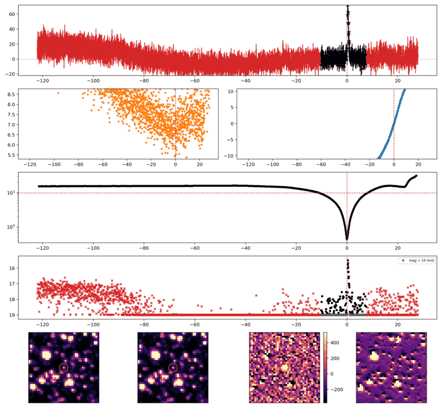
Search centered on refined position (92.9006055, -14.2970279 deg). Gaia coordinates are at J2016.0; proper motions are shown, without epoch propagation. A positional match does not change the candidate flags.
| Source ID / catalog entry | Separation (arcsec) | RA (deg) | Dec (deg) | G (mag) | BP (mag) | RP (mag) | Parallax ± error (mas) | PM RA* ± error (mas/yr) | PM Dec ± error (mas/yr) | RUWE | Variability |
|---|---|---|---|---|---|---|---|---|---|---|---|
| 2994334757917074816 | 2.421 | 92.8999775 | -14.2967414 | 14.784 | 15.488 | 13.965 | 3.126 ± 0.024 | -5.507 ± 0.020 | 1.278 ± 0.021 | 1.039 | VARIABLE |
Retrieved 2026-10-26T06:49:25.602426+00:00
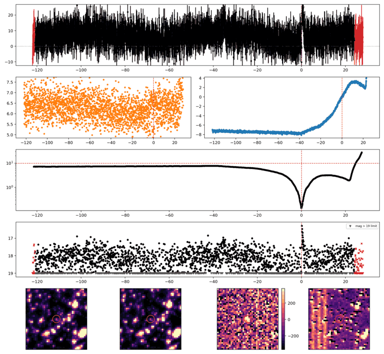
Search centered on refined position (102.1232458, -40.4029106 deg). Gaia coordinates are at J2016.0; proper motions are shown, without epoch propagation. A positional match does not change the candidate flags.
| Source ID / catalog entry | Separation (arcsec) | RA (deg) | Dec (deg) | G (mag) | BP (mag) | RP (mag) | Parallax ± error (mas) | PM RA* ± error (mas/yr) | PM Dec ± error (mas/yr) | RUWE | Variability |
|---|---|---|---|---|---|---|---|---|---|---|---|
| 5575649925748823040 | 4.035 | 102.1246172 | -40.4025036 | 15.715 | 16.774 | 14.681 | 2.479 ± 0.033 | -8.958 ± 0.038 | 35.015 ± 0.039 | 1.239 | NOT_AVAILABLE |
| 5575649925747303936 | 4.748 | 102.1243370 | -40.4018864 | 20.246 | 20.572 | 18.572 | 0.899 ± 0.529 | -2.303 ± 0.645 | 5.517 ± 0.585 | 1.151 | NOT_AVAILABLE |
Retrieved 2026-10-26T06:49:26.358349+00:00
Representative chosen by category, detection count, then Gaussian S/N. Original measurements and classifications are retained below.
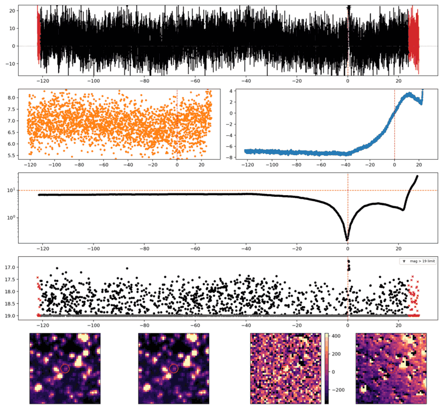
Search centered on refined position (107.2514535, -36.6059449 deg). Gaia coordinates are at J2016.0; proper motions are shown, without epoch propagation. A positional match does not change the candidate flags.
| Source ID / catalog entry | Separation (arcsec) | RA (deg) | Dec (deg) | G (mag) | BP (mag) | RP (mag) | Parallax ± error (mas) | PM RA* ± error (mas/yr) | PM Dec ± error (mas/yr) | RUWE | Variability |
|---|---|---|---|---|---|---|---|---|---|---|---|
| 5566347267104289280 | 4.120 | 107.2500509 | -36.6061493 | 15.771 | 16.711 | 14.805 | 1.678 ± 0.035 | -4.855 ± 0.041 | 10.705 ± 0.041 | 1.303 | NOT_AVAILABLE |
Retrieved 2026-10-26T06:49:27.108555+00:00
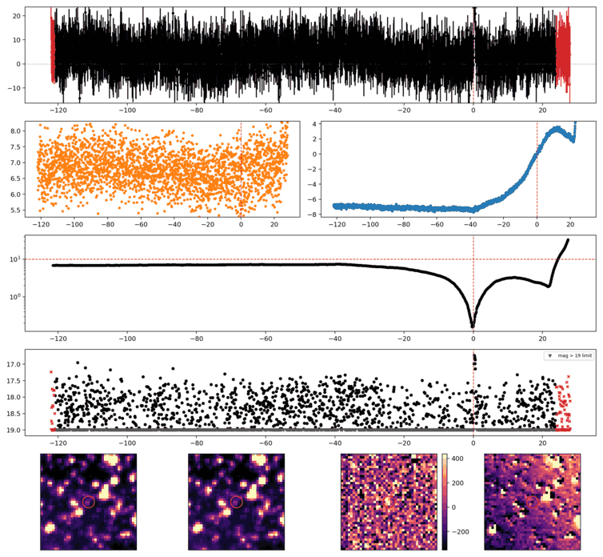
Search centered on refined position (107.2521047, -36.6072586 deg). Gaia coordinates are at J2016.0; proper motions are shown, without epoch propagation. A positional match does not change the candidate flags.
| Source ID / catalog entry | Separation (arcsec) | RA (deg) | Dec (deg) | G (mag) | BP (mag) | RP (mag) | Parallax ± error (mas) | PM RA* ± error (mas/yr) | PM Dec ± error (mas/yr) | RUWE | Variability |
|---|---|---|---|---|---|---|---|---|---|---|---|
| 5566347198382360192 | 2.568 | 107.2517583 | -36.6079154 | 18.435 | 19.153 | 17.629 | 0.288 ± 0.116 | -1.140 ± 0.141 | 1.404 ± 0.134 | 0.990 | NOT_AVAILABLE |
Retrieved 2026-10-26T06:49:27.863634+00:00
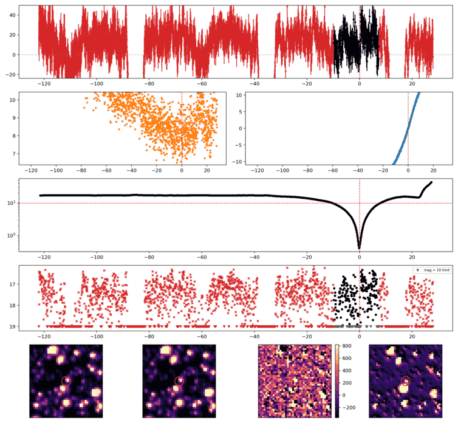
Search centered on refined position (108.4525849, -18.1870233 deg). Gaia coordinates are at J2016.0; proper motions are shown, without epoch propagation. A positional match does not change the candidate flags.
No Gaia DR3 sources found within 5 arcseconds.
Retrieved 2026-10-26T06:49:28.604361+00:00
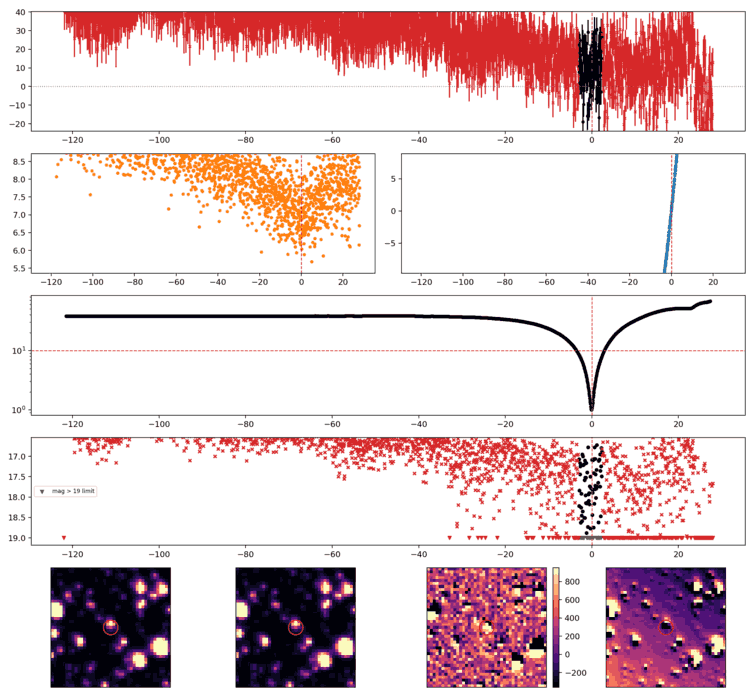
Search centered on refined position (103.2567813, -27.8040406 deg). Gaia coordinates are at J2016.0; proper motions are shown, without epoch propagation. A positional match does not change the candidate flags.
| Source ID / catalog entry | Separation (arcsec) | RA (deg) | Dec (deg) | G (mag) | BP (mag) | RP (mag) | Parallax ± error (mas) | PM RA* ± error (mas/yr) | PM Dec ± error (mas/yr) | RUWE | Variability |
|---|---|---|---|---|---|---|---|---|---|---|---|
| 2919041125061420544 | 2.091 | 103.2570189 | -27.8034991 | 19.172 | 19.844 | 18.478 | 0.175 ± 0.216 | -0.963 ± 0.180 | 2.395 ± 0.223 | 1.092 | NOT_AVAILABLE |
| 2919041129359748864 | 4.910 | 103.2554311 | -27.8046990 | 20.121 | 21.271 | 19.034 | 1.610 ± 0.425 | 0.832 ± 0.388 | -7.928 ± 0.442 | 0.954 | NOT_AVAILABLE |
Retrieved 2026-10-26T06:49:29.352343+00:00
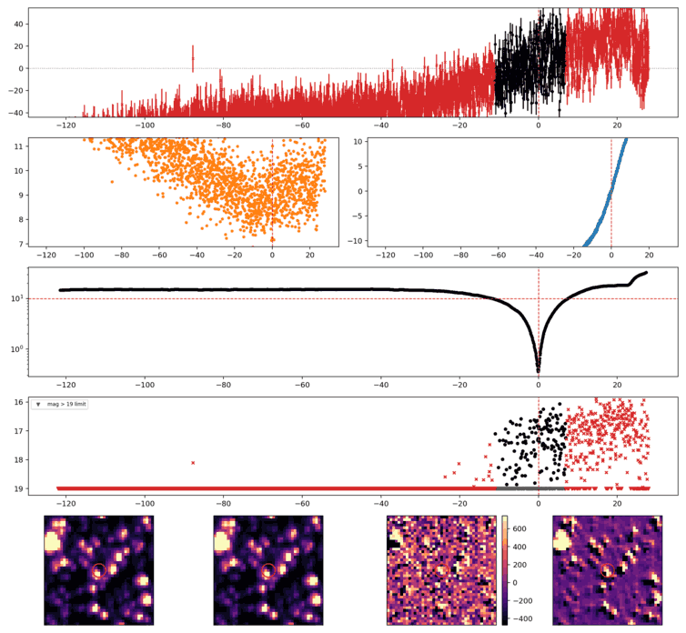
Search centered on refined position (110.7514785, -27.1920700 deg). Gaia coordinates are at J2016.0; proper motions are shown, without epoch propagation. A positional match does not change the candidate flags.
No Gaia DR3 sources found within 5 arcseconds.
Retrieved 2026-10-26T06:49:30.102344+00:00
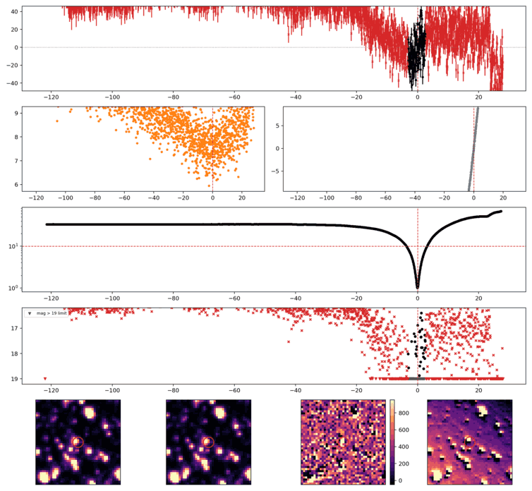
Search centered on refined position (103.8054568, -27.9417843 deg). Gaia coordinates are at J2016.0; proper motions are shown, without epoch propagation. A positional match does not change the candidate flags.
No Gaia DR3 sources found within 5 arcseconds.
Retrieved 2026-10-26T06:49:30.873311+00:00
Representative chosen by category, detection count, then Gaussian S/N. Original measurements and classifications are retained below.
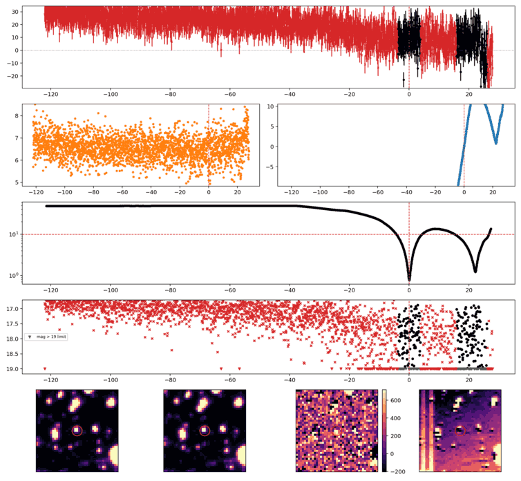
Search centered on refined position (90.0374506, -51.1250993 deg). Gaia coordinates are at J2016.0; proper motions are shown, without epoch propagation. A positional match does not change the candidate flags.
No Gaia DR3 sources found within 5 arcseconds.
Retrieved 2026-10-26T06:49:31.615364+00:00
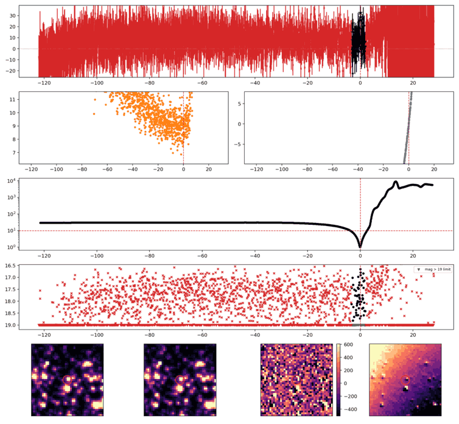
Search centered on refined position (105.6696103, -4.0751686 deg). Gaia coordinates are at J2016.0; proper motions are shown, without epoch propagation. A positional match does not change the candidate flags.
No Gaia DR3 sources found within 5 arcseconds.
Retrieved 2026-10-26T06:49:32.363046+00:00
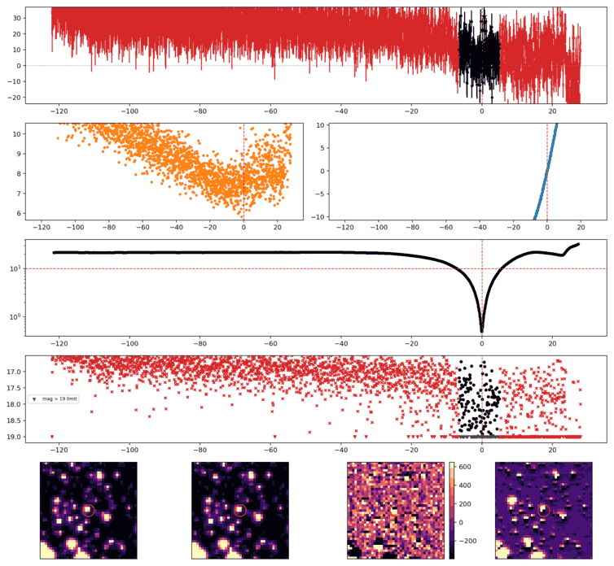
Search centered on refined position (94.4409405, -21.6397801 deg). Gaia coordinates are at J2016.0; proper motions are shown, without epoch propagation. A positional match does not change the candidate flags.
No Gaia DR3 sources found within 5 arcseconds.
Retrieved 2026-10-26T06:49:33.149686+00:00
Representative chosen by category, detection count, then Gaussian S/N. Original measurements and classifications are retained below.
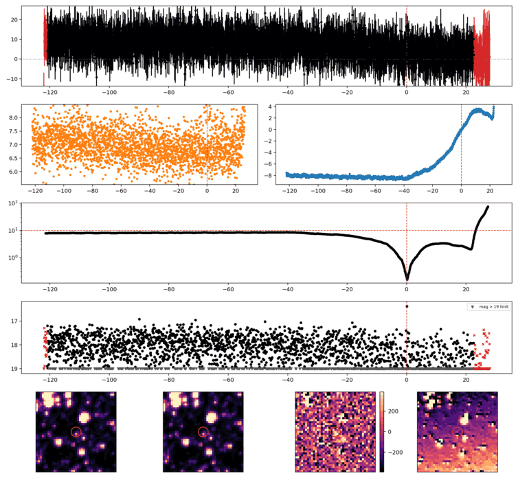
Search centered on refined position (102.5828126, -37.6850263 deg). Gaia coordinates are at J2016.0; proper motions are shown, without epoch propagation. A positional match does not change the candidate flags.
No Gaia DR3 sources found within 5 arcseconds.
Retrieved 2026-10-26T06:49:33.904306+00:00
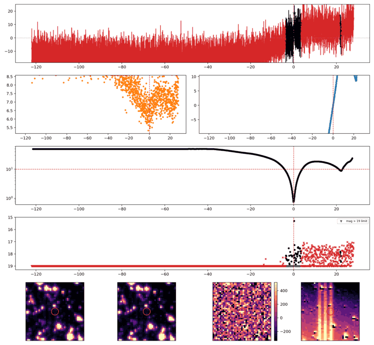
Search centered on refined position (97.2151594, -51.4359176 deg). Gaia coordinates are at J2016.0; proper motions are shown, without epoch propagation. A positional match does not change the candidate flags.
No Gaia DR3 sources found within 5 arcseconds.
Retrieved 2026-10-26T06:49:34.649463+00:00
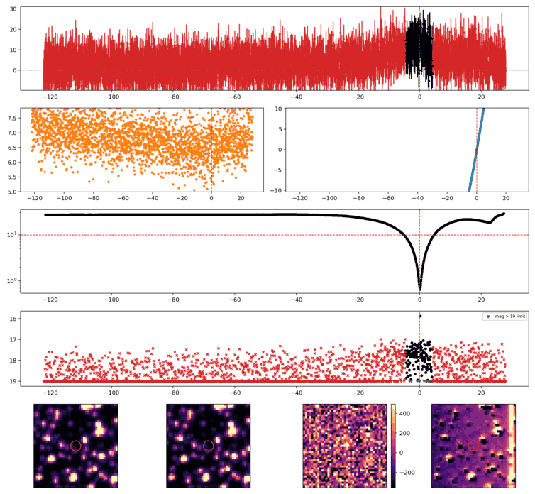
Search centered on refined position (86.4836429, -24.1134304 deg). Gaia coordinates are at J2016.0; proper motions are shown, without epoch propagation. A positional match does not change the candidate flags.
No Gaia DR3 sources found within 5 arcseconds.
Retrieved 2026-10-26T06:49:35.401609+00:00
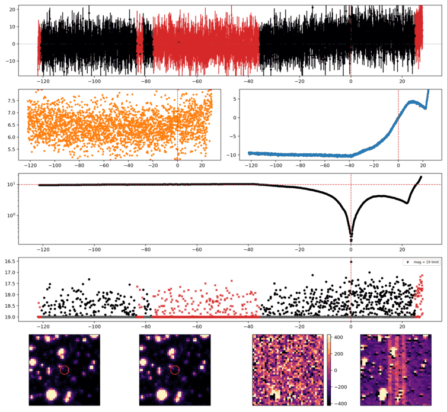
Search centered on refined position (92.2504357, -45.5796209 deg). Gaia coordinates are at J2016.0; proper motions are shown, without epoch propagation. A positional match does not change the candidate flags.
No Gaia DR3 sources found within 5 arcseconds.
Retrieved 2026-10-26T06:49:36.151040+00:00
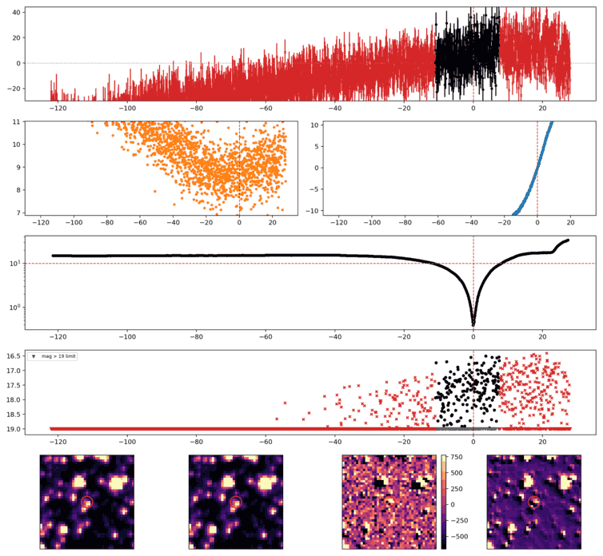
Search centered on refined position (110.0956638, -24.8751253 deg). Gaia coordinates are at J2016.0; proper motions are shown, without epoch propagation. A positional match does not change the candidate flags.
| Source ID / catalog entry | Separation (arcsec) | RA (deg) | Dec (deg) | G (mag) | BP (mag) | RP (mag) | Parallax ± error (mas) | PM RA* ± error (mas/yr) | PM Dec ± error (mas/yr) | RUWE | Variability |
|---|---|---|---|---|---|---|---|---|---|---|---|
| 5616904284920183552 | 0.874 | 110.0953964 | -24.8751337 | 18.884 | 19.424 | 18.263 | 0.179 ± 0.185 | -2.261 ± 0.117 | 1.893 ± 0.171 | 0.960 | NOT_AVAILABLE |
Retrieved 2026-10-26T06:49:36.943299+00:00
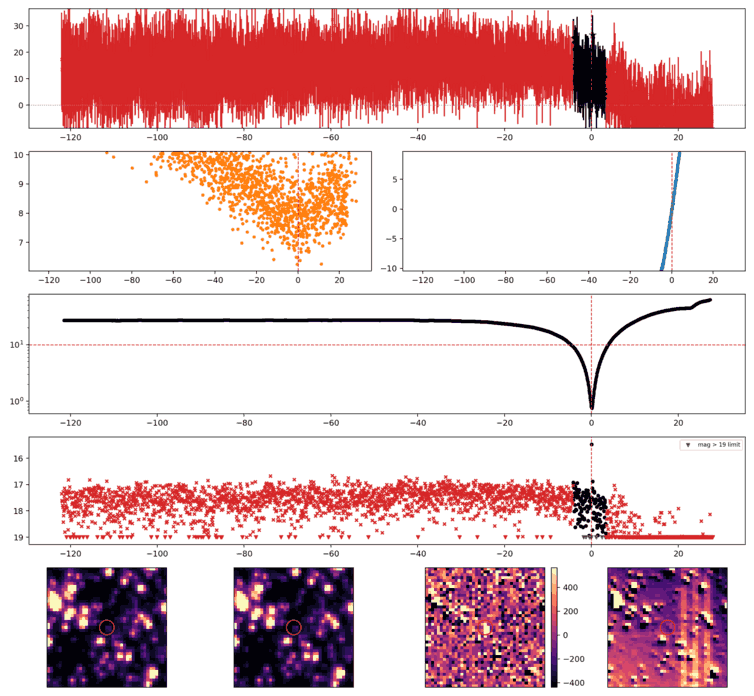
Search centered on refined position (104.2268199, -27.5242101 deg). Gaia coordinates are at J2016.0; proper motions are shown, without epoch propagation. A positional match does not change the candidate flags.
No Gaia DR3 sources found within 5 arcseconds.
Retrieved 2026-10-26T06:49:37.693930+00:00